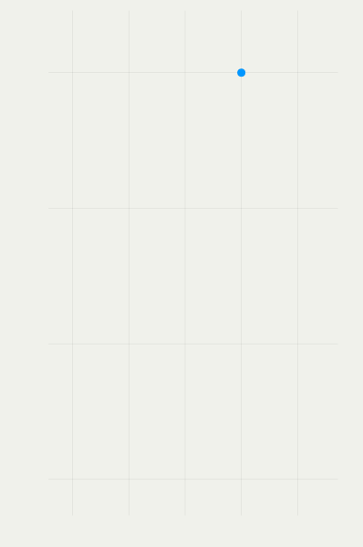
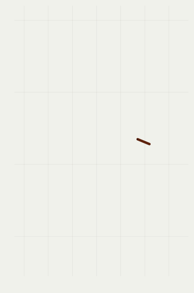
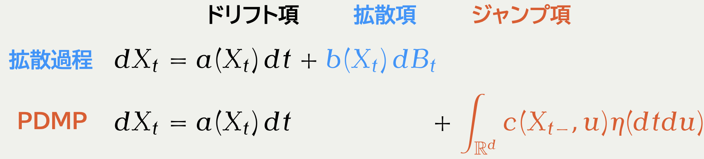
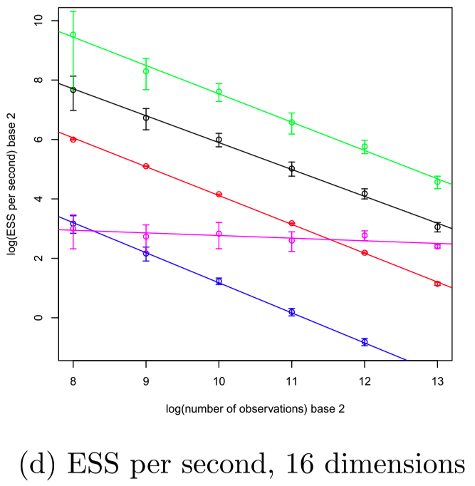
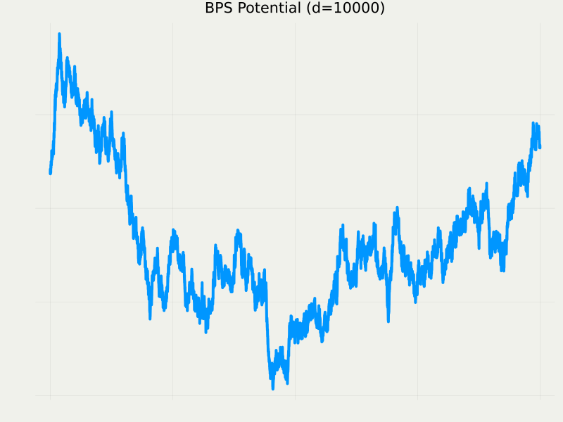

或る区分確定的マルコフ過程の
スケーリング極限
2/05/2026
1 背景：PDMP とその現状

モンテカルロ法に用いられる PDMP の例：Forward Event-Chain Monte Carlo
A Blog Entry on Bayesian Computation by an Applied Mathematician
$$
$$
1.1 モンテカルロ法小史

（1953〜）

（1978〜）

（2008〜）
1.2 Piecewise Deterministic Markov Process

直感：SDE より ODE の離散化の方が「扱いやすい」


1.4 PDMP は離散化法としての自由度が極めて高い

スパースな相互作用を持つマルコフ確率場モデル（d=10）
局所実装
BPS で，sparsity を利用した実装をすると，HMC よりも「推定量の分散／時」が良い．

Stochastic Gradient
横軸：観測数 n，縦軸：有効サンプルサイズ．
ロジスティック回帰（d=16）．
Zig-Zag で，control variate を用いると，データサイズ n に対して O(1) の性能
n\to\infty の極限で Langevin を越す．
2.3 先行研究：Zig-Zag v. BPS (Bierkens et al., 2022)

L(s,t)=2-\int^t_s\int^t_sK(u,v)\,dudv
K は動径運動量 R のカーネル K(s,t)=\operatorname{E}[R_sR_t]

dY_t=-\frac{\sigma^2(\rho)}{4}Y_t\,dt+\sigma(\rho)\,dB_t \sigma^2(\rho)=8\int^\infty_0e^{-\rho s}K(s,0)\,ds
2.7 主貢献1：FECMC のスケーリング極限は BPS と同じ形

dY_t^{\textcolor{#0096FF}{\text{B}}}=-\frac{\sigma^2_{\textcolor{#0096FF}{\text{B}}}(\rho)}{4}Y_t^{\textcolor{#0096FF}{\text{B}}}\,dt+\sigma_{\textcolor{#0096FF}{\text{B}}}(\rho)\,dB_t \sigma^2_{\textcolor{#0096FF}{\text{B}}}(\rho)=8\int^\infty_0e^{-\rho s}\operatorname{E}[R_0^{\textcolor{#0096FF}{\text{B}}}R_s^{\textcolor{#0096FF}{\text{B}}}]\,ds

dY_t^{\textcolor{#E95420}{\text{F}}}=-\frac{\sigma^2_{\textcolor{#E95420}{\text{F}}}(\rho)}{4}Y_t^{\textcolor{#E95420}{\text{F}}}\,dt+\sigma_{\textcolor{#E95420}{\text{F}}}(\rho)\,dB_t \sigma^2_{\textcolor{#E95420}{\text{F}}}(\rho)=8\int^\infty_0e^{-\rho s}\operatorname{E}[R_0^{\textcolor{#E95420}{\text{F}}}R_s^{\textcolor{#E95420}{\text{F}}}]\,ds